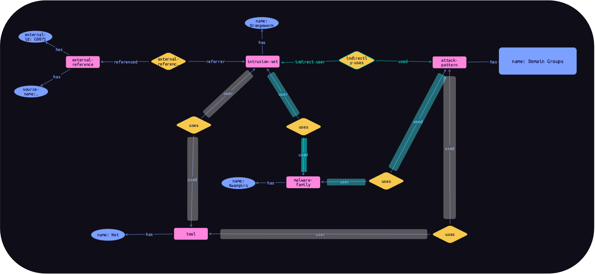

CTI knowledge base
TypeDB-backed knowledge representation system with formal STIX 2.1 semantics, predefined inference rules, and direct TypeQL query access.
TypeDB
STIX 2.1
TypeQL
SATRAP-DL unifies a logic-based CTI knowledge platform (SATRAP) and a real-time alert analysis service (DECIPHER) in a suite of open-source tools. SATRAP reasons over STIX 2.1 data to answer complex threat queries with explainable results; DECIPHER automates alert triage, severity scoring, and incident case creation building on an interoperable open-source stack.

TypeDB-backed knowledge representation system with formal STIX 2.1 semantics, predefined inference rules, and direct TypeQL query access.
Inference engine derives new threat relationships from stored CTI. Answers include the derivation steps, keeping analysis traceable and explainable.
Ingest STIX 2.1 bundles from MITRE ATT&CK and MISP; transform and load into the knowledge base with a single command.
Extensible FastAPI REST service for real-time alert triage. New threat scenarios are added as self-registering analyzer plugins with zero changes to routing code.
Configurable severity-confidence scoring based on MISP sightings, admiralty scale ratings, event threat level, and MITRE ATT&CK tag relevance.
Prioritized incident cases created in Flowintel automatically, with score breakdowns and formatted analysis reports attached to each case.
Set up the full SATRAP-DL stack — DECIPHER service, MISP, and Flowintel — with the provided Docker Compose scripts.
RADAR triggers DECIPHER on a security alert; IOCs are searched in MISP to retrieve CTI events, sightings, and threat context.
DECIPHER computes a severity‑confidence score from enriched alert data and risk factors for automated priority assignment.
The incident is escalated with a priority. An analyst reviews the Flowintel case and runs SATRAP playbooks for deeper CTI reasoning and explainable threat queries.
Recovery actions are informed by the score breakdown and analyst reasoning outcomes.